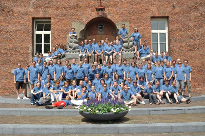

Over ESMG Quadrivium
Het Eindhovens Studenten Muziek Gezelschap Quadrivium is de studentenmuziekvereniging voor klassieke muziek in Eindhoven.
Oprichting ESMG
 De wortels van de vereniging zijn te vinden in de jaren zestig als het Eindhovens Studenten Koor wordt opgericht als ondervereniging van het Eindhovens Studenten Corps (ESC). In 1964 neemt het koor afscheid van het ESC en gaat verder als twee onafhankelijke muziekverenigingen: het ESMG (1 december 1964) en Tuna-Ciudad de Luz. Het ESMG breidt snel uit; het koor wordt uitgebreid met een orkest met zo'n twintig strijkers en houtblazers. In de lente van 1965 presenteert het ESMG zich voor het eerst aan het grote publiek. Sindsdien wordt het regelmatig gevraagd om te spelen bij de officiële gelegenheden aan de Technische Hogeschool (Opening Academisch jaar en Dies Natalis). In de jaren erna kent het ESMG de nodige ups en downs: ensembles ontstaan en verdwijnen. In 1976 wordt het ESMG, tot dan toe slechts voor klassieke muziek, uitgebreid met de sectie Modern, die zich toelegt op het uitvoeren van pop- en jazzmuziek.
Huidige Structuur
Rond 1980 wordt de basis gelegd voor de huidige structuur: de onderverenigingen. Harmonieorkest Auletes ontstaat uit een blaaskwintet en een dwarsfluitkwartet (1979). Strijkorkest Ma Non Troppo wordt in 1980 opgericht; een succesvolle koorworkshop resulteert in de vorming van het koor Vokollage. Een aantal jaren later (1986) mag ook Sambuca, het blokfluitensemble, het levenslicht zien. In 1989 wordt ter ere van het vijfde lustrum van het ESMG een bigband opgericht, dat een repertoire heeft dat hoofdzakelijk bestaat uit showmuziek. Vanwege het succes dat deze groep heeft, leidt dit uiteindelijk tot een nieuwe sectie binnen ESMG: bigband Studentproof. In 1993 verzelfstandigen de verschillende secties; de verenigingen Modern, Bigband en Klassiek worden opgericht. De vereniging ESMG Klassiek wordt kort daarna omgedoopt tot ESMG Quadrivium. In 2002 wordt het strijkorkest omgevormd tot kamerorkest dat zich in 2009 hernoemt tot symfonieorkest. Sinds 2002 bestaat ESMG Quadrivium dus uit 4 onderverenigingen: harmonieorkest Auletes, symfonieorkest Ensuite, gemengd koor Vokollage en blokfluitensemble Sambuca.
Doelstellingen
Quadrivium stelt zich ten doel de activiteiten met de nadruk op klassieke muziek op niet-beroepsmatige basis van Eindhovense studenten te bevorderen. Dit kan groepsgewijs door aan te sluiten bij een ondervereniging of ensemble en op individuele basis door gebruik te maken van piano's of repetitieruimtes (als zogenaamd 'PIANOLID'.) Naast het uitvoeren van concerten wordt Quadrivium gevraagd om gelegenheden met klassieke muziek op te luisteren. Het opluisteren wordt vooral door pianoleden en ensembles uitgevoerd. Quadrivium blijft een studentenvereniging; hier hoort het bieden van een haven om lekker te ontspannen en nieuwe mensen te leren kennen zeker bij. Ludieke muzikale activiteiten, die los staan van concertuitvoeringen, maar ook niet-muzikale activiteiten komen geregeld voor. Quadrivium speelt graag in op de vraag van haar leden; als een lid een leuk idee voor een activiteit heeft, dan kan hier bijvoorbeeld een commissie voor opgesteld worden om deze activiteit te realiseren. Op deze manier staat Quadrivium nooit stil.